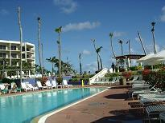
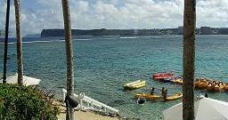

二日目を見に行く
二日目を見に行く

長い通路を通り抜け、一階の荷物受け取りの場へ行くと、三つのベルトコンベアが
あり、係員の人がスーツケースなどをコンベアから下ろしていました。
節電のためと思われ、他の空港では見たことのない光景です。
そういえば、空港の建物を出た途端にロビーの電気が消えたところもあった と、思い出しながらも、コンベアの表示を順に見ていくと、なんと、ＫＡＮＳＡＩ・ ＮＡＲＩＴＡ・ＮＡＧＯＹＡとなっており、三機とも日本から来たものでした。
まだ入国審査の終わってない人が沢山残っている、名古屋からのコンベアはゴトゴ トと稼動しており、色とりどりのスーツケースや鞄が手際よくあちこちに固めて下ろ されている最中で、自分のスーツケースが遠くから回ってくるまで待っていなくても よく、自分が動くことでみつけられるので、人手は要るが、これはかなりの節電がで きるに違いないし、旅客もスムーズに流れるに違いないと感心する。
出口の近くの銀行で円をＵＳドルに換金し、出口へ向かうと、旅行会社の人が スーツケースに括りつけたパッケージを目標に声をかけてきて、空港の建物から外 に出ると、むあーっと熱い空気にさらされる。
エンジンをかけっぱなしで並んでいる何台かのバスの前を通り過ぎ、自分たちの乗 るバスの前に立っていた運転手さんに、スーツケースを預けて車内に乗り込むと、 今度は冷やーっと寒いくらいにクーラーが効いており、そうか…コンベアで節約され たＣＯ２は、こんなところで放出されていたんだ…と、妙なことで納得している私で ありました。
バスは最初の人が乗り込んでから２０分後には出発することになっているようで、
２．３度暑い中を旗を片手に往復した案内の女性が戻ってくると出発し、リコンフ
ァームのために帰りの航空券引き換え書を集め始め、
「おい、ええのか？」
と、夫が小声で心配する。
「これは旅行会社がチャーターしたバスで、あの人は旅行会社の人だから大丈夫
だよ」
と説明するが、
「あれ渡したら帰れんぞ」
と、またいらぬ心配を… （＾－＾；
グアムの気候は、１２月から５月までは乾季ですが、昨年の１２月８日に大変大 きな台風に見舞われ、どんなことになっているのやら…と、空港を出てから窓の外が 気になっていましたが、空港のある高台からビーチ沿いにあるホテル群の見えるとこ ろまで下ってくると、あちこちのホテルの瓦屋根のようになっている部分が、 ところどころ剥がれているのがわかり、なんだか全体的に殺風景になっているような 感じを受け、よくよく見ると、椰子の葉がほんの少ししか頭に付いておらず、ちょっ とは付いているかなと思えば枯れていたり…そのせいだと気が付いた。
ホテルの建ち並ぶビーチ沿いに走る広いホテルロードまで下ってくると、がけ崩れが あったようで、二車線ずつあったはずの道路がなんとか車同士がすれ違えるほどの幅 を残して、工事中になっておりました。
一日はレンタカーを借りて島内観光をしてまわり、あとは買い物をしたり、ドッグ レースに行ったりするくらいで、海やプールで退屈していようというのが大まかな プランでしたが、グアムの道路の通行量を一目見るなり、レンタカーを借りるのは 止めようと夫が言いました。
「右側通行だし、思っていたより車も多い…」
って、だから何度も言ったじゃん（＾－＾；
やっとホテルの部屋に落ち着いて、窓の外を見ると目の前が駐車場で、ちょっとだけ
海が見えます。
部屋指定はできないと聞いていたので、何も問題はないのですが、なんだかすごく
疲れた気分で、ツアーデスクが５時には閉まってしまうというので、行って来なくて
は…と、立ち上がりました。
ツアーデスクは最初にバスを降りた入り口の傍にあり、そちらに向かって歩き出すと、
夫はまず目に付いた出入り口に向かって歩いていく。
「違う 違う」
と後を追いかけるが、どうやらはじめての場所で方向を見失っているようで、滞在中
何度も「あっちがどこどこで…」「いや、どこどこはこっちだ」と、まあ いやはや
退屈しない夫婦でございます。（＾へ＾；
グアムには米軍の空軍基地があり、そこを見てみたいと言う夫の要望と、基地を抜 けて行く海水浴場には星の砂の浜があり、素敵なところだと耳にしていたので、そこ でジャングルツアーをしたり、シュノーケリングなどをして一日遊べるオプショナル を申し込もうとしたのですが、テロ騒動から行けなくなったとのことでした。
「潜水艦は？」
「それなら大丈夫です（＾ー＾）」
予定では潜水艦だけにしようと決めていたのですが、海上からもマリンライフツアー
をセットにしたものに変更して、申し込もうとしたところ、
「それも、今はできません」
とのこと。
「ドッグレースはどうなんでしょう？」
「台風で施設が使えなくなっており、ワンちゃんも逃げてしまって…」
「ワンちゃん、逃げちゃったのですか？」
そのワンちゃんは何処へ行ってしっまたのかと心配になって聞いた私の言葉に、危険
じゃないの？という意味に取ったのか、案内の女性は慌てて
「それは冗談ですが」
と、付け加えました。
とりあえず潜水艦のツアーを翌日の午前中にすることに決め、かなり入り組んでいそ うなホテル内を探索し、食事のできるところなどを覚えておこうと、歩き始める。
ロビーのすぐ下にレストラン発見！
ケーキやパン、コーヒーなどを持ち帰りのできそうなお店も、その前にあります。
レストランの近くから外に出ると、広い野外カウンターバーのようになっており
、夜は松明のようなものが焚かれるらしく、それらしきものがあちこちに点在して
おり、傍にはプールがありました。

ご覧の通り、椰子の葉っぱはほんの少しで、→
１月にはなんにもなく 幹が立っているだけ
だったそうです。
近寄ってみると、なんと足元に書いてある水深が１．８Ｍ。
「これじゃあ、潜ってプールの底を歩くしかなさそうだ…」
もうひとつ向こうのプールを見に行ってみると、これが水深１．５Ｍ（T＿T）
私の身長は１５１ｃｍであり、泳げるものならば問題はないが、泳げないに等しく、
「私の遊べるところがない…」
もう少し歩いていくと、子供用のような浅いプールがみつかり、
「うん、これなら大丈夫」
とちょっと安心していたら、それはウォータースライダー用のプールで、そんなところ
で遊んでいたら、上から滑ってきた人が打つかってきそう…
温泉などにある打たせの滝のようなものが三つあって、上はどうなっているのだろ う？と、横の階段を上っていくと、水中バスケットとでも言いましょうか、バレー ボールのコートくらいの広さのプールの真ん中に網が張ってあり、バスケットの ボールを入れるような虫取り網の底が抜けたような ものが片側の真ん中にあって、バレーボールのようなボールが置いてありました。
その隣に、やっと私にも入れそうな１．１Ｍのプールが、まるで露天風呂のように 海に面した崖の上にあり、その隣にはジャグジーもあり、これは遊べそうだとちょ っと安心する。
ホテルは海側が崖になっている小高いところにあり、プールのあるところがＢ１Ｆ
から出られ、その下に続く階段を下りると海になっています。
砂浜はほんの少しあるだけで、だんだん高くなる石垣の下で波がちゃぷちゃぷと揺れ
ており、一箇所にだけ海へ降りられる階段がありました。

←この右側から白い砂浜が湾曲して続いており、突き出た半島の先端の「恋人岬」
まで繋がっています。
湾内はかなり浅く、安心して遊んでいられるようですが、ホテルの監視員が見ていて、
危険な場所に近づくと笛を鳴らして警告をするようになっており、シュノーケリングで
遊ぶにはもってこいの場所です。
白い波頭が立っているところからは急に深くなっているようで、海の色も違いました。
大きなタイヤのようなものがついた三輪車風の乗り物や、カヌーなどが紐で繋いであ り、帰る日になってから気が付いたのですが、ライフジャケットや水中眼鏡、シュ ノーケルなどが借りられるようになっており、知っていたらもっと海に入っていたの に…と、悔しい思いをしました。
小スペースの砂浜の方を見ると、どうやら砂浜沿いに歩いて行けそうなので、 歩いてみようということになり、真っ白な砂浜を行くと、白い珊瑚のかけらが沢山 落ちており、これが波に砕けてこんなに白い砂浜になったのかも知れないと思ったり もする。
私たちのホテルから次のホテルまでの間はイバオビーチと呼ばれ、地元の人が家族 連れで遊んでおり、何かを拾い集めている人がいたり、釣りをしている人がいたりと のどかな雰囲気でしたが、倒れたままの椰子の木がそのままになっていたりして、 まだそこまでは手が回らないといった感じでもありました。
６．７人の人が並んで乗れそうな細長いカヌーのようなものをみつけて近くに行って みると、浮きのような細長いものが、バランスをとるためにカヌーのひとつ分より もう少し離して横についており、後日、これが海に出ているのを見ましたが、かなり早 いスピードで湾内を漕ぎ進んでいきました。
浜から入って行けそうなホテルをみつけて、
「お邪魔しまーす」
とばかりに入って行くと、総合スポーツのリゾート基地となっているらしい、その広い
敷地内で迷いながらもなんとかホテルの外に出ることができ、道路に出てみると、
まだこんな所かと驚くくらいにたいして遠くへは来ていませんでした。
が、工事中の道路の向こうにコンビニを発見して、覗きに行ってみる。
ホテル群からちょっと離れた場所なので、お土産になりそうなものは何もなかったの ですが、夫婦の暗黙の了解のようなもので、缶ビールの値段を見てみると、ホテルの 一本分の値段で６本も買えてしまう。（なんと嬉しい…）
おつまみの鱈チーズとお好み菓子のようなものを買い、６本の缶ビールを抱えて、 またもやさっきのホテルの入り口から、あたかもそのホテルの宿泊客のような顔をし て入り、砂浜沿いに自分たちのホテルへ戻ってくると、早速プシュ！！
レストランは曜日によってメニューが違うようで、その日は鉄板焼きのようなもの
でした。
肉と魚のどちらかを選ぶことができ、ふと、隣の片付けてない席を見ると、分厚くて
大きなステーキがしっかり残っていたので、魚を選びました。
バイキングも食べられるようで、メインを待っていられずに、あれやこれやとお皿に 持ってきて食べていると、じゅうじゅうと音を立てた大きな鉄板の上に乗った料理が 運ばれてきて、その内容といえば、 こぶし大くらいのジャガイモがホイルで包み焼きになっており、片身になったロブ スター、大きなえび、貝柱、白身魚の焼いたもの、とうもろこしなどがでーん！と 並んでいる。
これでは、いかに美味しくても食べられないはずだ…と、隣の席に残っていたステー キを思い出す。
兎にも角にも食べに食べたり、一人前２８＄（３５００円くらい）で、三人前くらい 食べてしまい、お腹がパンクしそうになりました。（＾－＾；
部屋に帰ってお風呂に入ったりして、テレビを見ながら（衛星放送のＮＨＫが見え
ます）ベッドに横になっていると、お腹が苦しいながらも、長い一日の疲れが出たの
か、私は１０時には寝てしまい、
「日本時間ならまだ９時だがや」
と、夫は一人さみしくテレビを見ていたようです。
作成:2004-08-23
二日目を見に行く